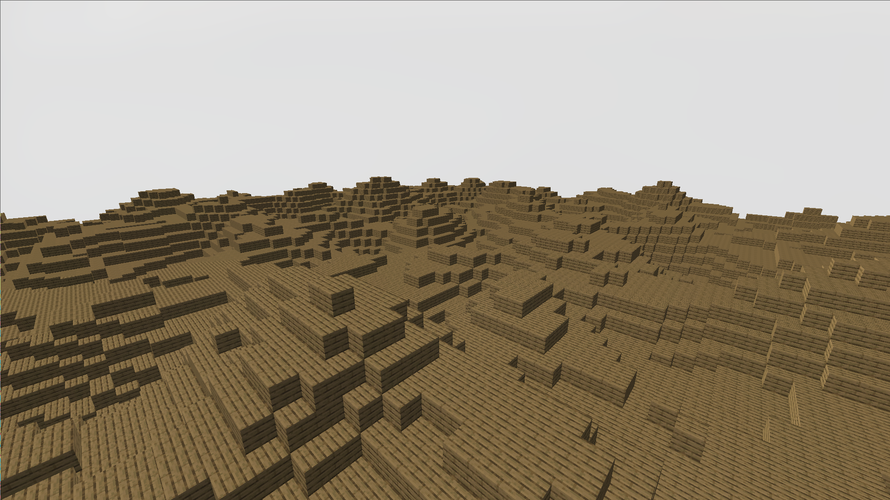
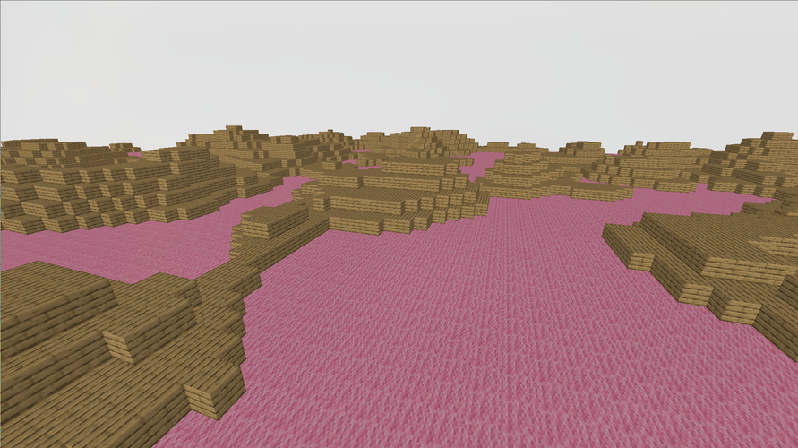
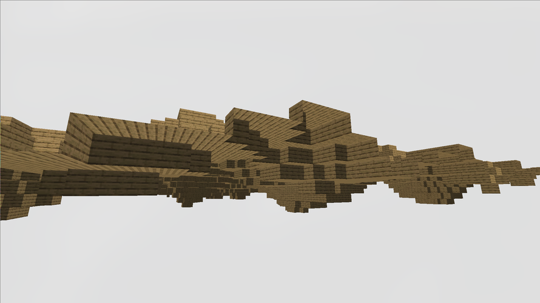

Minecraft Clone
Honestly I'm surprise I haven't created something of a Minecraft clone already. I originally just wanted to play around with more in depth graphics programming (in 3D specifically) and prior to this I had only ever used Processing and p5.js's 3D rendering capabilities, as well as Three.js for a cool basic online multiplayer game. Obviously these come with the benefits of JavaScript, but sadly,they also come with the drawbacks of JavaScript (or Java in the case of Processing). Because of this and a desire to improve my handle on the C++ standard lib, STL and language in general, I decided between OpenGL or Vulkan, which led me to pick OpenGL almost arbitrarily. I've heard a lot about the two previously, and from my limited research I found that Vulkan was more "low-level" than OpenGL and therefore could get more performance squeezed out of it, but still it was harder and this was my first time being in the weeds of graphics programming, so I thought I'd make things easy for myself and switch later if I felt I needed to.
At this point, the people of reddit praised learnopengl.org so I followed it's tutorials, and would recommend it, or it's physical bool version, to anyone interested in dipping their toes. Either way, I got through the basics of rendering and started to figure out how I would put together a little Minecraft simulation, which I ended up deciding to call Mingleburb for no reason other than I thought it was funny.
First, what do I want to happen with this little experiment:
- I want to be able to render blocks of different textures with culled faces (more on that later)
- Those blocks should be generated using Perlin Noise and held in chunks
- There should be free cam controls using the wasd and arrow key/mouse controls
- Blocks should be removable and placable by the player relative to where they look
- The entire project should be organized, from the make files, to the encapsulation of classes
World Data (pt.1)
The first and easiest bit to tackle was the creation of rendered blocks, and to do this I started by just creating a simple block struct that held some data. In my thinking, I wanted to hold the least amount of data possible for each block, and tried to make it's footprint as small as possible. I'll talk about the faces member variable later, but the others are pretty self explanatory, though they were modified later to be more efficient (as of now I'm being punished for fixing something that already worked as the entire simulation is bugged because of my memory greed T-T).
// Block.hpp
struct Block {
std::stirng texture; // Texture name for block
unsigned char faces; // Which faces of the block are visible
bool air; // Is this an air block
Block() : air(true) {}
Block(const char* textureName) : texture(textureName), air(false) {}
With that out of the way, these were simple stored in a c-style 3-dimensional array. Also at this point in the program, the entirely of the code base was 1 main.cpp file, and so I create a much nicer structure consisting of an App class that holds the Player, GameManager, and GraphicsManager with some like player having their own smaller classes like the Player's InputManager. This made everything a lot more organized, but this also began to become a little annoying. In C++, they way I learned to develop object oriented programs was to write a .h or .hpp file to hold all the declarations of a class, then implement that classes functions/constructors/whatever else in a separate .c or .cpp file. This is fine, but I wish it was easier to make edits in a .cpp or .hpp file and not have to make essentially the same changes in another files just so they agree with each other. I understand the appeal of header files but I just find this specific aspect annoying. Besides the point, with a structured code base the first major task I wanted to tackle was player input. This became pretty easy as I was using GLFW for my window creation and writing an InputManager based on callbacks and events was something I've done countless times in JavaScript DOM with functions like window.createEventListener("keydown" (e) => { handleInput(e) };.
Player Controls
This proved to have two main challenges. First, I was completely ignorant to callbacks in C and C++, and for some reason didn't just Google it like any normal person, instead just messing around with global variables and gross c-style type casts until something worked. After that was more or less solved, I was onto camera movement. There are 3 directions I needed to concern myself with. And the way camera rotation functions in OpenGL is you give the camera a position for itself, and a position to look at. To combat this I just kept track of the pitch and yaw with variables in the Player class, and added a unit vector to the camera position according to those angles to give the camera the correct position. After some struggling this turned out as so lookDir = glm::normalize(glm::vec3(std::cos(yaw), std::tan(pitch), std::sin(yaw))); (glm being a math library for constructs such as vectors, quaternions and matrices commonly used to interface with OpenGL and GLSL shaders). With that done, I just attached these rotations to change when the arrow keys are pressed via the Player's InputManager class and would also attach these variables to the change in mouse position to give mouse controls which are toggle-able via the Globals.hpp file. As far as camera translation goes, it really is just some similar trigonometry. We need to translate local movement to global movement. This means if I press w I want the player, from it's perspective to move forward, or increase it's z position. But because the player can manipulate its pitch rotation, meaning that increasing the player's local z almost never translates directly to changing its global z. Therefore we increase the players global z by the std::cos(yaw) * z + std::cos(yaw + PI / 2) * x in the world x direction, where the x and y in that equation represent the player's local translation. This extends to std::sin(yaw) * z + std::sin(yaw + PI / 2) * x in the world z direction, and y is just directly mapped from local to world translation.
Face Culling
Next up was face culling, which tells the renderer to only draw faces that the player is able to see to the screen. This effectively means if a block is next to another block, don't draw either of the faves that touch, that also means that we only really render the surfaces that touch air blocks on the surface (the surface being at y = 5 on a 10 x 10 x 10 "chunk"). This came with A LOT of segmentation faults that I had not the foggiest idea on how to debug. I eventually found the program GDB which is used to help debug c and c++ programs (I think) and was able to at least get the callstack before the segfault occurred. Still these remained insanely difficult to debug and iron out and a lot of considerations had to come into play. First I had to deduce how to tell OpenGL to render a block with missing faces, which was actually the majority of the blocks in the world. I came up with using an unsigned char to store each face. One pattern I decided on early is that if I had to refer to each axis in the 3D world or the faces of a cube, it would always follow the order of +x, -x, +y, -y, +z, -z to keep consistency. This turned into flipping 6 of the 8 bits in an unsigned char according to which faces of that Block should be rendered. I really liked my solution to this and in the following code snippet, in the char, any of the first 6 bits containing a 1 indicate that its corresponding face should not be rendered. We set those bigs with the bitwise or operator ('|'), and choose which bit to assign by bitshifting the the binary 0x10000000 to the right corresponding to the face index. One thing to note, getBlock will return 'nullptr' if the requested block is out of bounds, and a Block* with an id of 0 if the block represents air (also air is skipped in the rendering process) Now the actually face culling:
void GameManager::cullFaces(int x, int y, int z) {
Block* block = getBlock(x, y, z);
unsigned char faces = 0;
if(block == nullptr || block->id == 0) return;
Block* dirs[6] = {
getBlock(x + 1, y, z),
getBlock(x - 1, y, z),
getBlock(x, y + 1, z),
getBlock(x, y - 1, z),
getBlock(x, y, z + 1),
getBlock(x, y, z - 1),
};
for(int i = 0; i < 6; i++) {
unsigned char f = 0b10000000 >> (i);
Block* b = dirs[i];
if (b == nullptr || (b != nullptr && b->id != 0)) {
faces = faces | f;
}
}
faces = ~faces;
block->faces = faces;
}
This took quite a white to get right and I'm very proud of the result.
Block Highlighting
The id that I mentioned also keeps track of the texture to be applied to each block, which are loaded using stb_image, and textured onto each face of the block. Additionally there's functionality for highlighting the block that the player is looking at. Currently I have a "naive" approach, depending on how you look at it, of creating a vector that essentially points what direction the player is looking, and is scaled up depending on the players viewDistance. Once this reach vector is created, we lerp across the the reach vector, adding the players position. For each stage of the lerp, we round the currently checked point to the nearest integer and attempt to get a block at that point. If the result is not nullptr or an air block, that is the selected block, the lerp stops, and we tell the block to highlight itself in the next render. This code comes out to look like this, and I will talk about why this is a naive approach in my opinion.
void Player::castBlockRay(GameManager* gameManager) {
Block* block;
// a is the interpolation values
// 100 equally spaced vectors to test between the player and its max reach
for(float a = 0; a < 1.0f; a += 0.01f) {
// the actual lerping
glm::vec3 reach(
position.x + (lookDir.x * viewDistance) * a,
position.y + (lookDir.y * viewDistance) * a,
position.z + (lookDir.z * viewDistance) * a
);
// round and test for a block
block = gameManager->getBlock(
int(reach.x + 0.5),
int(reach.y + 0.5),
int(reach.z + 0.5)
);
if(block != nullptr && block->id != 0) {
selectedBlock = block;
selectedBlockCoords = glm::vec3(
std::floor(reach.x + 0.5),
std::floor(reach.y + 0.5),
std::floor(reach.z + 0.5)
);
return;
}
}
selectedBlock = nullptr;
}
One limitation I've found with this method is that it can be inaccurate and miss blocks. Say the player is looking at the corner of a block and the ray from the players view begins to march forward to its max reach. If the lerped vector increases by too big a step at the corner, or edge, of the block it may skip past and the effect would be as if the player is highlighting a block that is behind the actual block they are looking at. Although this can be solved easily by simply testing more vectors between the player's position and the max reach, it still leaves one issue unresolved. With this method we cannot deduce what side of the block the player is looking at (reliably). One method could be that we record the distance that the ray is able to travel before it reaches a block, then afterwards cast another ray with a slight rotational offset so it lands a bit to the right of the first. With this we might be able to find the angle which the two collision points lie on and possible deduce what face the player is looking at but this comes with a lot of edge cases and inefficiencies. The other option is a method that is almost identical to the method I used in my Wolfenstien style Terminal renderer, where rays are cast and step across each axis by integer values and testing which of the 2 axis rays travel the least, and which blocks they collide with. In short, this will be able to give a concrete distance for how far the player's view ray is able to travel, and which side of the block that ray collides with, based on which axis ray it finds the closest. Though like many things I get the feeling there are far easier to implement and just as effective methods that I haven't thought of. One idea I got from Dr. John R. Kender was to keep my eyes on the actually painting step of the graphics pipeline. What he suggested was to find which face quads are drawn in the center of the screen and, using the depth buffer, which face is the closest. I think this is a fantastic idea, but as it stands I'm unsure how to get information from the GPU's GLSL shader code back to the CPU's c++ side of things. So for now I'm going to leave this issue unresolved and perhaps return at a later date. If you have any ideas on how to implement this, I would love to hear them, so please feel free to e-mail me at hdiambrosio@gmail.com.
Project Organization
Coming into this the most "project organization" I did was throwing everything in a src folder and calling it good. But I took a different approach for this little experiment and really wanted to get to know the common tools of c++ better: those being make and gdb. I knew what make did and the basics of getting a project compiled but several things were missing that I needed. First, as this project grew bigger, and especially when I started to add more 3rd party libraries, having to compile those every single time I made even the smallest of changed grew annoyingly slow, ESPECIALLY on my school's Chromebook where I programmed most of this. That being said I knew it was possible to only compile files that had changed, and after a quick video about the basics of make, I found this:
./obj/%.o: %.cpp
$(CPPC) $(CPPGLAGS) $(WARNINGS) -c -o $@ $^
There was some more moving parts to the real makefile, but this is main attraction, where I essentially tell make that if it needs any sort of object file that isn't already compiled into an object file, go compile just that file and continue. What this also allows is the skipping of compiling files that have not changed since the last run of make. Finally, a friend of mine squibid suggested I use the shell command pkg-config --libs --cflags glfw3 so that I could get the proper names of the library files I had to link to. This removed the need for me to change the makefile weather I was programming on my desktop running Void Linux, or my Chromebook running Debian, which both have different names for the glfw library files. This improved the workflow tremendously and I would have burn out of this project far sooner if I hadn't taken the time to at least learn the basics.
The other lifesaver for this project was gdb or the GNU Project Debugger. This tool allows me to add a -g flag to my g++ call and add debug information to the executable. Then running gdb on the file allows me to run the file until I reach a segmentation fault. The magic happens when I run backtrace which then gives me the call stack before my code went wrong. THIS!!! THIS GODSEND GIFT SAVED ME HOURS!!! Before gdb, I used to just comment out code until I didn't get segfaults, then try to puzzle out the issue, only to get a completely unrelated segfault right afterwards. I still get them quite often and were huge demotivators in the development of Mingleburb but you live and you learn. Either way I want to become more familiar with gdb in the future as it seems to have a lot of really useful features like being able to see the values of local variables, step through instructions, view Assembly outputs and use breakpoints in code.
Gallery
Some simple terrain generation using basic perlin noise.
Differnt textured blocks can be rendered with each other. A sea of pink wool with some islands made of wood.
Blocks are culled everywhere a player shouldn't be able to see, in between two blocks, from the void of the world.
